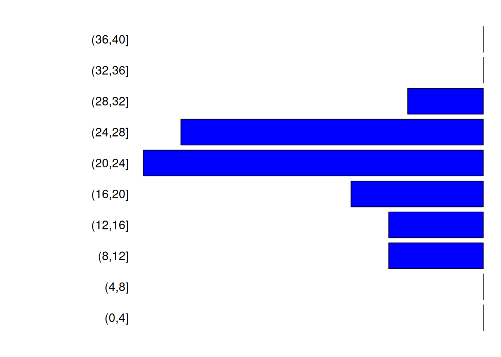

3 Population growth, conflicts and migrations
3.1 Settlements position
n <- 20 # we will create 20 sites
size <- rexp(n) #assign a size for each site following an exponential distribution Thanks to the previous chapter, use spatSample from package terra to randomly select n points (20 for this simulation) on this viable polygon.
sites <- spatSample(viable, n) # generate n random points within the viable polygon and assign to variable sites
plot(height.ras^1.9, col=col_ramp(50), legend=F, reset=F)
plot(height.wat, col="lightblue", add=T, legend=F)
plot(sites, cex=2, pch=21, add=T, bg=rainbow(length(sites), alpha=.6))
# get only the non submerged actual land and plot it
above_level <- height.ras > mean(height.ras[])
coastline <- st_as_sf(as.polygons(above_level))[2,]
plot(coastline, col=NA, bgc=adjustcolor("cyan", 0.1), add=T)
In the context of the archaeoriddle challenge, files that describe this newly generated environment (the DEM and the coastline), the resources and the positions of the sites sampled needs to be produced and given to the participant. This can be done as:
foldname="data_toshare" #We will store all data that can/will be shared with participant in data_toshare
if(!file.exists(foldname))dir.create(foldname)
st_write(dsn=file.path(foldname,"coastline.shp"), coastline,append=F) # Write the coastline as a shapefile
## Writing layer `coastline' to data source
## `data_toshare/coastline.shp' using driver `ESRI Shapefile'
## Writing 1 features with 1 fields and geometry type Multi Polygon.writeRaster(filename=file.path(foldname,"dem_raster.tiff"), height.ras, overwrite=T) #write the DEM as a raster
writeRaster(filename=file.path(foldname,"resources.tiff"), ress, overwrite=T) #write the resources as a rasterThe original data, saved and shared for the archaeoriddle are stored in data_original/
3.2 Network, Site Size And Climate – DEPRECATED
The following steps were designed but never used ; they can be quite fun and useful.
Create a network between sites (requires igraph)
library(igraph)
subsites <- sites
crs(subsites) <- "+proj=lonlat"
subsites <- sites[sample(nrow(sites), 20), ]
ig <- graph_from_adjacency_matrix(
as.matrix(distance(subsites)), weighted=T, mode="undirected")
ig <- set_graph_attr(ig, "layout", crds(subsites))
V(ig)$label <- ""
V(ig)$size <- (size+1)*5
V(ig)$frame.color <- "black"
V(ig)$frame.width <- .5
E(ig)$weight <- 1/(E(ig)$weight^2)
E(ig)$width <- exp(E(ig)$weight)+.6
allcomu <- cluster_louvain(ig)$memberships[1,]
V(ig)$color <- allcomu
E(ig)$color <- allcomu[head_of(ig,E(ig))]
plot(height.ras^1.9, col=col_ramp(50), legend=F, reset=F)
plot(height.wat, col="lightblue", add=T, legend=F)
plot(ig, add=T, rescale=F, alpha=.2)
Visualise sites on the 3D plot
plot_3d(
hm_lamb,height_map, zscale=20, fov=0, theta=20, zoom=1, phi=45,
windowsize=c(1000, 800), water=TRUE, waterdepth=mean(height),
wateralpha=1, watercolor="lightblue", waterlinecolor="lightblue",
waterlinealpha=.7
)
render_points(
extent=raster::extent(raster::raster(height.ras)),
lat=2.13828, long=-1.685547, altitude=extract(height.ras,sites)[,1]+20,
zscale=20, size=1, col=categorical_pal(max(allcomu))[allcomu],
clear_previous=TRUE
)
render_points(
extent=raster::extent(raster::raster(height.ras)),
lat=crds(sites)[,"y"], long=crds(sites)[,"x"], altitude=extract(height.ras, sites)[,1]+20,
zscale=20, size=1, col=categorical_pal(max(allcomu))[allcomu],
clear_previous=TRUE
)
render_highquality(point_radius=5, samples=256, clear=TRUE, light=TRUE)let’s say the climate modulate site size in a naive way:
for(i in seq(1, tstep, length.out=100)){
layout(matrix(1:2, nrow=2, ncol=1), heights=c(.8, .2))
par(mar=c(1, 2, 2, 1))
image(m, ann=F, axes=F, main=i)
mtext(round(i), 3, 1)
nsize <- size*faketemp[i] + size + 1
points(crds(sites), bg="green", pch=21, cex=nsize)
par(mar=c(2, 2, 0, 1))
plot(
1:tstep, faketemp, type="l", ylab="temp", xlab="time", ylim=range(faketemp),
ann=F, frame.plot=F)
points(i, faketemp[i], col="red", pch=20)
}Population will then grow, for years and years. This implies multiple things: population need resources and a way to grow with regard to these resources and their own technologies.We initialised the ressource layer in the previous chapter in the section about ressources. In the following sectinos we will use this ressource raster to initialise site size et define how ressource are used by the different culture.
3.3 Initializing Site Size and Culture:
Each site is then assigned as either belonging to the hunter-gather (HG) or farmer (F) culture.
To generate a more realistic distribution, all sites are initially, designated as hunter-gatherer sites, except for the one located in the most southwest position. Please note that this decision was based on the specific shape of the initial archaeoriddle’s challenge. If needed, you may want to manually select the site culture for this specific location.
cultures <- rep("HG",length(sites))
sw <- which.min(sqrt((crds(sites)[,"x"] - min(crds(sites)[,"x"]))^2 + (crds(sites)[,"y"] - min(crds(sites)[,"y"]))^2))
cultures[sw]="F"
sites$culture <- cultures
plotMap(height.ras,height.wat)
points(crds(sites),bg=as.factor(cultures),pch=21,cex=1.3)
Each site will then be assigned a carrying capacity (how many people can leave on the site), probabilistically defined using the resource raster and the culture of the site.
Kbase <- c("HG"=45,"F"=120) #difference in base-K for the two cultures
# The base Ks are then modulated given the ressource raster
sites$Ks <- initKs(Kbase, sites, ress, sizeexp="F")Using these carrying capacities, we then set initial number of people, and the population structure for each sites:
# Population size at initialisation, a number close to Ks
INs <- round(runif(length(sites), 0.85, 0.95)*sites$Ks)
# initialise population structure for all sites
Ips <- lapply(INs, initpopstruc)
ts <- 150
# We put the population structure across the years in a matrix: each row will represent a time step of the simulation ; each column a sites
Nts <- initlistsites(Ips, ts=ts)We can look at the population structure of the biggest site:
biggest <- which.max(INs)
pop.biggest <- Ips[[biggest]]
poplist=sapply(c(F="F",M="M"),function(s)table(cut(pop.biggest[pop.biggest[,2]==s,1],breaks=seq(0,40,4))))
par(mar=c(1,10,1,1))
barplot(-poplist[,1],beside=T,horiz=T,col=c("blue"),axes=F,las=1)
par(mar=c(1,1,1,10))
barplot(unname(poplist[,1]),beside=T,horiz=T,col=c("red"),axes=F)
You can see the code ofinitKs, initpopstruct and initlistsites functions here:
Show code
Code
## Function 14. Initial carrying capacity
initKs <- function(Kbase=c("HG"=30,"F"=120), sites, ressources,
sizeexp=NULL, rate=.5){
Ks <- round(Kbase[sites$culture] + rnorm(length(sites), 0, 10))
while(any(Ks<1)){
Ks <- round( Kbase[sites$culture] + rnorm(length(sites), 0, 10) )
}
#Ks[sites$culture=="F"]=Ks[sites$culture=="F"]*runif(sum(sites$culture=="F"),1,1)
tmp <- Ks * (1 + extract(ressources, sites)[, 2])
if(!is.null(sizeexp)){
tmp[sites$culture==sizeexp] <- (
(Ks[sites$culture==sizeexp]) *
(1 + rexp(sum(sites$culture==sizeexp), rate=rate) * extract(ressources, sites[sites$culture==sizeexp])[,2])
)
}
tmp
}
## Function 15. Create population matrix
initpopstruc <- function(n=100, ages=10:30, p_sex=c(0.5, 0.5)){
initpop = data.frame(
"Age" = sample(ages, n, ages, replace = TRUE),
"Sex" = sample(c("M", "F"), n, prob = p_sex, replace = TRUE))
return(initpop)
}
## Function 16. Initialize initial list of sites
initlistsites <- function(list_sites, ts=200){
Nts <- matrix(0, nrow=ts+1, ncol=length(list_sites))
Nts[1,] <- sapply(list_sites, nrow)
return(Nts)
}3.4 Population Growth
changePopSize: Change population size by moving population from one to another; or remove a group of people
3.7 Run Simulation
We now have sites with two cultures. The grow of the sites will depend on a lot of parameters; which are all a bit different depending on the two cultures. The list of parameters used is defined below:
#initialisation
Kbase=c("HG"=45,"F"=120) #difference in K for the two cultures use and defined before ; will be use in simulation to define new site
# spatial penality for cultural extentions, ie for population to move out of initial site : lower, bigger penality
cul_ext <- c("HG"=7, "F"=6)
# penality of occupational area ie how hard it is to come close to your site ; if low, other sites can come close
penal_cul <- c("HG"=4, "F"=5)
# proba to give birth every year
prob_birth <- c("HG"=0.3, "F"=0.5)
# proba to die when pop > K
prob_survive <- c("HG"=0.8, "F"=0.6)
# proba to create new settlement when Ne > K
prob_split <- c("HG"=0.2, "F"=0.6)
# how big the group of migrant should be to create a new city vs
# migrate to a existing one
minimals <- c("HG"=0.14, "F"=0.20)
# prob to migrate to existing settlement when Ne > K
prob_move <- c("HG"=0.2,"F"=0.1)Let’s see our raster map again, and put the sites on top, with their ids and showing there initial population size:
plotMap(height.ras,height.wat,paste0("year ", 0))
plot(sites, pch=21, add=T, bg=rainbow(2, alpha=0.6)[as.factor(sites$culture)],cex=(1+Nts[1,]/100))
text(sites,pos=3)
The run_simulation function will take the raster data and parameters for defined before for the two different cultures and run for the specified number of years ts (150).
It uses a number of other functions to model contacts between sites, the outcomes of fights and migrations
The general organisation of the algorithm is as follow:
initialisation for all sites s: N_s <- growth(N_s) if(N_s>K_s): moving people: if( N_s - K-S > min_s * K_s and probsplit_s): create new city: find the closest most attractive spot and move there else if(proba move ): migration war(s)
1. ** initialisation **
2. for (i in 2:(ts+1))
inactives <- (Nts[i-1,]==0)
for ( s in sample(seq_along(sites)[!inactives]) : #among all active site
N_s <- Gpd()
if $N_s> K_s$ :
migrants <- newN - round(Ks[[s]]*0.9)
if (migrants >= (minimals[sites$culture[s]]*sites$Ks[s]) & runif(1)<prob_split[sites$culture[s]] ){
#if subpopulation > 10 people, 10% chance of creation of a new city
infarea <- (sqrt(tmp)+penal_cul[cultures]) * buffersettl
buffersize <- rnorm(length(infarea), infarea, infarea * 0.1)
buffersize[tmp==0] <- 0
territory <- erase(viable, buffer(sites, buffersize))
if( length(territory)>0 ){
##select a new site given its distance to the old one and the ressourcesource available in ressources
d2 <- logisticdecay( sites[s], dem, x=20000*cul_ext[sites$culture[s]])
w <- (0.7 * d2 + 0.3*ressources) / (0.7*minmax(d2)[2] + 0.3*minmax(ressources)[2])
new_site <- spatSample(
x=mask(
w * logisticdecay(sites[s], dem, k=0.00002,
x=20000*cul_ext[sites$culture[s]]),
territory),
size=1, method="weights", xy=T)[1:2]
new_site <- vect(new_site, geom=c("x","y"))
if ( length(new_site)>0 & all(!is.na(crds(new_site))) ){
##add new site to site listes
Ips[[length(Ips)+1]] <- initpopstruc(n=migrants) #initialise a fake populaition, will be updated by real migrants later
new_site$culture <- sites$culture[s]
new_site$Ks <- round(initKs(
Kbase, sites=new_site, ressources,
sizeex="F", rate=0.45))
sites <- rbind(sites, new_site)
Ks[length(Ks)+1] <- new_site$Ks
}
}
}
## if no creation of new city happen, there is a certain probability that people will move
if( length(new_site)==0 && runif(1) < prob_move[sites$culture[s]] ){
#migration to existing site
att <- extract(ressources,sites)[,2]
space <- sites$Ks - (Nts[i-1,] + migrants)
dis <- extract(logisticdecay(sites[s], dem, k=0.00002, x=1), sites)[,2]
attractivity <- att * space * dis
#attractivity=attractivity*(1+10*(sites$culture[s]==sites$culture)) #4 times more likely to go to similar culture
attractivity[s] <- min(attractivity)-1
attractivity <- exp(attractivity)/sum(exp(attractivity))
attractivity[Nts[i-1,]<10] <- 0
attractivity[sites$culture!=sites$culture[s]] <- 0
if(any(is.na(attractivity))){
print(attractivity)
attractivity[is.na(attractivity)] <- 0
}
city <- sample(size=1, x=seq_along(sites), prob=attractivity)
Nts[i,city] <- Nts[i-1,city] + migrants
}
if( havemoved ){
Ips[c(s,city)] <- changePopSize( loosingPop=Ips[[s]], winingPop=Ips[[city]], size=migrants)
newN <- newN - migrants
}
}
Nts[i,s] <- newN
}
## WAR =======================
potentialfighters <- which(sites$culture=="F" & Nts[i,]>50)
for (s in sample(x=potentialfighters, size=round(length(potentialfighters)*0.1))){
buff <- bufferatack
potentialvictims <- which(sites$culture !=sites$culture[s] & Nts[i,]>0)
clash <- whotouch(s, sites, Ne=Nts[i,], buffersize=buff)
if(length(clash)>0 && !is.na(clash)){
if(length(clash) == 1){
attack <- clash
} else {
attack <- sample(clash, 1)
}
newns <- fightbetterloss(Ne=Nts[i,], a=s, b=attack)
casualties <- sum(Nts[i, c(s,attack)] - newns[c(s,attack)])
warcasualties[i] <- casualties
sizew <- casualties^2/4000
warpoints(sites, s, attack, Ne=Nts[i,],
buffersize=buff, sizewar=sizew+0.5)
#effectively kill people in population (should be done taking into account age pyramid to be more realistic)
Ips[[s]] <- changePopSize(loosingPop=Ips[[s]],
size=(Nts[i,s] - newns[s]))
Ips[[attack]] <- changePopSize(loosingPop=Ips[[attack]],
size=(Nts[i, attack] - newns[attack]))
Nts[i,] <- newns
}
}
return(list(Nts=Nts, warcasualties=warcasualties, Ips=Ips, sites=sites))
}onesimu <- run_simulation(
sites=sites, viable=viable, dem=height.ras,
ressources=ress,
water=height.wat,
foldervid="nan",
visu=F, visumin=F,
ts=ts, #length of simulation in year
Kbase=c("HG"=35, "F"=110), #difference in K for the two cultures
cul_ext=c("HG"=7, "F"=6), #spatial penality to extent: lower, bigger penality
penal_cul=c("HG"=4, "F"=5), #penality of occupational area: low, other sites can cam close
prob_birth=c("HG"=0.3, "F"=0.5), #proba of giving birth every year
prob_survive=c("HG"=0.8, "F"=0.65), #proba of dying when pop > K
prob_split=c("HG"=0.5, "F"=0.6), #proba of creating a new settlement when Ne > K
minimals=c("HG"=0.14,"F"=0.20), #how big the group of migrant should be to create a new city vs migrate to a existing one
bufferatack=300, #distance max around which settlement can fight
prob_move=c("HG"=0.2, "F"=0.1) #proba of migrating to existing settlement when Ne > K
)
## [1] "year 2 total 1095 with 20 sites ( F:1,HG:19 )"
## [1] "year 3 total 1209 with 20 sites ( F:1,HG:19 )"
## [1] "year 4 total 1251 with 20 sites ( F:1,HG:19 )"
## |---------|---------|---------|---------|========================================= |---------|---------|---------|---------|========================================= [1] "new settlement (HG) of K 25 and pop 9"
## |---------|---------|---------|---------|========================================= [1] "5 migrant from HG to HG"
## |---------|---------|---------|---------|========================================= |---------|---------|---------|---------|========================================= [1] "new settlement (HG) of K 28 and pop 5"
## [1] "year 5 total 1273 with 22 sites ( F:1,HG:21 )"
## |---------|---------|---------|---------|========================================= |---------|---------|---------|---------|========================================= [1] "new settlement (HG) of K 36 and pop 4"
## |---------|---------|---------|---------|========================================= [1] "8 migrant from HG to HG"
## [1] "year 6 total 1264 with 23 sites ( F:1,HG:22 )"
## |---------|---------|---------|---------|========================================= [1] "40 migrant from F to F"
## [1] "year 7 total 1296 with 23 sites ( F:1,HG:22 )"
## |---------|---------|---------|---------|========================================= |---------|---------|---------|---------|========================================= [1] "new settlement (HG) of K 37 and pop 9"
## |---------|---------|---------|---------|========================================= [1] "6 migrant from HG to HG"
## [1] "year 8 total 1274 with 24 sites ( F:1,HG:23 )"
## |---------|---------|---------|---------|========================================= [1] "7 migrant from HG to HG"
## |---------|---------|---------|---------|========================================= [1] "4 migrant from HG to HG"
## |---------|---------|---------|---------|========================================= [1] "5 migrant from HG to HG"
## |---------|---------|---------|---------|========================================= [1] "38 migrant from F to F"
## [1] "year 9 total 1301 with 24 sites ( F:1,HG:23 )"
## |---------|---------|---------|---------|========================================= |---------|---------|---------|---------|========================================= [1] "new settlement (HG) of K 35 and pop 4"
## |---------|---------|---------|---------|========================================= |---------|---------|---------|---------|========================================= [1] "new settlement (HG) of K 55 and pop 4"
## [1] "year 10 total 1294 with 26 sites ( F:1,HG:25 )"
## [1] "year 11 total 1282 with 26 sites ( F:1,HG:25 )"
## |---------|---------|---------|---------|========================================= |---------|---------|---------|---------|========================================= [1] "new settlement (HG) of K 38 and pop 9"
## [1] "year 12 total 1274 with 27 sites ( F:1,HG:26 )"
## [1] "year 13 total 1283 with 27 sites ( F:1,HG:26 )"
## [1] "year 14 total 1286 with 27 sites ( F:1,HG:26 )"
## |---------|---------|---------|---------|========================================= [1] "7 migrant from HG to HG"
## |---------|---------|---------|---------|========================================= [1] "6 migrant from HG to HG"
## [1] "year 15 total 1291 with 27 sites ( F:1,HG:26 )"
## |---------|---------|---------|---------|========================================= [1] "7 migrant from HG to HG"
## |---------|---------|---------|---------|========================================= [1] "4 migrant from HG to HG"
## [1] "year 16 total 1294 with 27 sites ( F:1,HG:26 )"
## |---------|---------|---------|---------|========================================= [1] "9 migrant from HG to HG"
## [1] "year 17 total 1292 with 27 sites ( F:1,HG:26 )"
## |---------|---------|---------|---------|========================================= |---------|---------|---------|---------|========================================= [1] "new settlement (HG) of K 28 and pop 6"
## [1] "year 18 total 1314 with 28 sites ( F:1,HG:27 )"
## [1] "year 19 total 1314 with 28 sites ( F:1,HG:27 )"
## |---------|---------|---------|---------|========================================= [1] "38 migrant from F to F"
## [1] "year 20 total 1335 with 28 sites ( F:1,HG:27 )"
## [1] "year 21 total 1299 with 28 sites ( F:1,HG:27 )"
## [1] "year 22 total 1296 with 28 sites ( F:1,HG:27 )"
## [1] "year 23 total 1283 with 28 sites ( F:1,HG:27 )"
## [1] "year 24 total 1278 with 28 sites ( F:1,HG:27 )"
## [1] "year 25 total 1260 with 28 sites ( F:1,HG:27 )"
## |---------|---------|---------|---------|========================================= [1] "4 migrant from HG to HG"
## |---------|---------|---------|---------|========================================= [1] "3 migrant from HG to HG"
## [1] "year 26 total 1270 with 28 sites ( F:1,HG:27 )"
## [1] "year 27 total 1275 with 28 sites ( F:1,HG:27 )"
## [1] "year 28 total 1266 with 28 sites ( F:1,HG:27 )"
## [1] "year 29 total 1266 with 28 sites ( F:1,HG:27 )"
## [1] "year 30 total 1265 with 28 sites ( F:1,HG:27 )"
## [1] "year 31 total 1270 with 28 sites ( F:1,HG:27 )"
## [1] "year 32 total 1281 with 28 sites ( F:1,HG:27 )"
## |---------|---------|---------|---------|========================================= [1] "36 migrant from F to F"
## [1] "year 33 total 1310 with 28 sites ( F:1,HG:27 )"
## |---------|---------|---------|---------|========================================= [1] "7 migrant from HG to HG"
## |---------|---------|---------|---------|========================================= [1] "7 migrant from HG to HG"
## [1] "year 34 total 1289 with 28 sites ( F:1,HG:27 )"
## [1] "year 35 total 1259 with 28 sites ( F:1,HG:27 )"
## [1] "year 36 total 1238 with 28 sites ( F:1,HG:27 )"
## [1] "year 37 total 1225 with 28 sites ( F:1,HG:27 )"
## [1] "year 38 total 1210 with 28 sites ( F:1,HG:27 )"
## [1] "year 39 total 1204 with 28 sites ( F:1,HG:27 )"
## [1] "year 40 total 1227 with 28 sites ( F:1,HG:27 )"
## [1] "year 41 total 1234 with 28 sites ( F:1,HG:27 )"
## [1] "year 42 total 1232 with 28 sites ( F:1,HG:27 )"
## [1] "year 43 total 1230 with 28 sites ( F:1,HG:27 )"
## [1] "year 44 total 1243 with 28 sites ( F:1,HG:27 )"
## |---------|---------|---------|---------|========================================= [1] "8 migrant from HG to HG"
## |---------|---------|---------|---------|========================================= [1] "7 migrant from HG to HG"
## |---------|---------|---------|---------|========================================= [1] "4 migrant from HG to HG"
## |---------|---------|---------|---------|========================================= [1] "35 migrant from F to F"
## |---------|---------|---------|---------|========================================= |---------|---------|---------|---------|========================================= [1] "new settlement (HG) of K 41 and pop 6"
## |---------|---------|---------|---------|========================================= |---------|---------|---------|---------|========================================= [1] "new settlement (HG) of K 36 and pop 4"
## [1] "year 45 total 1308 with 30 sites ( F:1,HG:29 )"
## |---------|---------|---------|---------|========================================= [1] "5 migrant from HG to HG"
## [1] "year 46 total 1303 with 30 sites ( F:1,HG:29 )"
## [1] "year 47 total 1307 with 30 sites ( F:1,HG:29 )"
## [1] "year 48 total 1302 with 30 sites ( F:1,HG:29 )"
## |---------|---------|---------|---------|========================================= |---------|---------|---------|---------|========================================= [1] "new settlement (HG) of K 30 and pop 7"
## [1] "year 49 total 1318 with 31 sites ( F:1,HG:30 )"
## [1] "year 50 total 1332 with 31 sites ( F:1,HG:30 )"
## [1] "year 51 total 1334 with 31 sites ( F:1,HG:30 )"
## [1] "year 52 total 1344 with 31 sites ( F:1,HG:30 )"
## |---------|---------|---------|---------|========================================= [1] "7 migrant from HG to HG"
## [1] "year 53 total 1336 with 31 sites ( F:1,HG:30 )"
## |---------|---------|---------|---------|========================================= [1] "8 migrant from HG to HG"
## |---------|---------|---------|---------|========================================= |---------|---------|---------|---------|========================================= [1] "new settlement (HG) of K 38 and pop 9"
## [1] "year 54 total 1359 with 32 sites ( F:1,HG:31 )"
## |---------|---------|---------|---------|========================================= |---------|---------|---------|---------|========================================= [1] "new settlement (HG) of K 17 and pop 4"
## [1] "year 55 total 1358 with 33 sites ( F:1,HG:32 )"
## |---------|---------|---------|---------|========================================= [1] "4 migrant from HG to HG"
## [1] "year 56 total 1366 with 33 sites ( F:1,HG:32 )"
## [1] "year 57 total 1374 with 33 sites ( F:1,HG:32 )"
## [1] "year 58 total 1376 with 33 sites ( F:1,HG:32 )"
## [1] "year 59 total 1377 with 33 sites ( F:1,HG:32 )"
## [1] "year 60 total 1379 with 33 sites ( F:1,HG:32 )"
## |---------|---------|---------|---------|========================================= [1] "5 migrant from HG to HG"
## [1] "year 61 total 1386 with 33 sites ( F:1,HG:32 )"
## [1] "year 62 total 1399 with 33 sites ( F:1,HG:32 )"
## |---------|---------|---------|---------|========================================= [1] "6 migrant from HG to HG"
## [1] "year 63 total 1406 with 33 sites ( F:1,HG:32 )"
## [1] "year 64 total 1410 with 33 sites ( F:1,HG:32 )"
## [1] "year 65 total 1398 with 33 sites ( F:1,HG:32 )"
## |---------|---------|---------|---------|========================================= [1] "5 migrant from HG to HG"
## [1] "year 66 total 1382 with 33 sites ( F:1,HG:32 )"
## |---------|---------|---------|---------|========================================= [1] "34 migrant from F to F"
## [1] "year 67 total 1430 with 33 sites ( F:1,HG:32 )"
## |---------|---------|---------|---------|========================================= [1] "4 migrant from HG to HG"
## |---------|---------|---------|---------|========================================= |---------|---------|---------|---------|========================================= [1] "new settlement (HG) of K 44 and pop 4"
## [1] "year 68 total 1417 with 34 sites ( F:1,HG:33 )"
## |---------|---------|---------|---------|========================================= [1] "8 migrant from HG to HG"
## [1] "year 69 total 1399 with 34 sites ( F:1,HG:33 )"
## [1] "year 70 total 1388 with 34 sites ( F:1,HG:33 )"
## |---------|---------|---------|---------|========================================= [1] "4 migrant from HG to HG"
## [1] "year 71 total 1403 with 34 sites ( F:1,HG:33 )"
## [1] "year 72 total 1418 with 34 sites ( F:1,HG:33 )"
## [1] "year 73 total 1430 with 34 sites ( F:1,HG:33 )"
## |---------|---------|---------|---------|========================================= [1] "3 migrant from HG to HG"
## |---------|---------|---------|---------|========================================= [1] "39 migrant from F to F"
## [1] "year 74 total 1468 with 34 sites ( F:1,HG:33 )"
## |---------|---------|---------|---------|========================================= |---------|---------|---------|---------|========================================= [1] "new settlement (HG) of K 4 and pop 4"
## |---------|---------|---------|---------|========================================= [1] "7 migrant from HG to HG"
## |---------|---------|---------|---------|========================================= |---------|---------|---------|---------|========================================= [1] "new settlement (HG) of K 36 and pop 6"
## [1] "year 75 total 1456 with 36 sites ( F:1,HG:35 )"
## |---------|---------|---------|---------|========================================= [1] "8 migrant from HG to HG"
## [1] "year 76 total 1459 with 36 sites ( F:1,HG:35 )"
## |---------|---------|---------|---------|========================================= [1] "3 migrant from HG to HG"
## [1] "year 77 total 1438 with 36 sites ( F:1,HG:35 )"
## |---------|---------|---------|---------|========================================= [1] "6 migrant from HG to HG"
## |---------|---------|---------|---------|========================================= [1] "0 migrant from HG to HG"
## [1] "year 78 total 1439 with 36 sites ( F:1,HG:35 )"
## [1] "year 79 total 1433 with 36 sites ( F:1,HG:34 )"
## [1] "year 80 total 1427 with 36 sites ( F:1,HG:34 )"
## |---------|---------|---------|---------|========================================= [1] "8 migrant from HG to HG"
## [1] "year 81 total 1434 with 36 sites ( F:1,HG:34 )"
## [1] "year 82 total 1415 with 36 sites ( F:1,HG:34 )"
## |---------|---------|---------|---------|========================================= [1] "5 migrant from HG to HG"
## |---------|---------|---------|---------|========================================= [1] "4 migrant from HG to HG"
## [1] "year 83 total 1402 with 36 sites ( F:1,HG:34 )"
## |---------|---------|---------|---------|========================================= |---------|---------|---------|---------|========================================= [1] "new settlement (HG) of K 46 and pop 3"
## [1] "year 84 total 1405 with 37 sites ( F:1,HG:35 )"
## [1] "year 85 total 1426 with 37 sites ( F:1,HG:35 )"
## [1] "year 86 total 1433 with 37 sites ( F:1,HG:35 )"
## |---------|---------|---------|---------|========================================= [1] "4 migrant from HG to HG"
## [1] "year 87 total 1420 with 37 sites ( F:1,HG:35 )"
## |---------|---------|---------|---------|========================================= [1] "3 migrant from HG to HG"
## [1] "year 88 total 1444 with 37 sites ( F:1,HG:35 )"
## |---------|---------|---------|---------|========================================= [1] "8 migrant from HG to HG"
## [1] "year 89 total 1430 with 37 sites ( F:1,HG:35 )"
## |---------|---------|---------|---------|========================================= [1] "11 migrant from HG to HG"
## [1] "year 90 total 1439 with 37 sites ( F:1,HG:35 )"
## |---------|---------|---------|---------|========================================= |---------|---------|---------|---------|========================================= [1] "new settlement (HG) of K 39 and pop 6"
## |---------|---------|---------|---------|========================================= [1] "7 migrant from HG to HG"
## [1] "year 91 total 1475 with 38 sites ( F:1,HG:36 )"
## |---------|---------|---------|---------|========================================= [1] "4 migrant from HG to HG"
## [1] "year 92 total 1470 with 38 sites ( F:1,HG:36 )"
## [1] "year 93 total 1472 with 38 sites ( F:1,HG:36 )"
## [1] "year 94 total 1478 with 38 sites ( F:1,HG:36 )"
## |---------|---------|---------|---------|========================================= [1] "4 migrant from HG to HG"
## [1] "year 95 total 1479 with 38 sites ( F:1,HG:36 )"
## [1] "year 96 total 1464 with 38 sites ( F:1,HG:36 )"
## |---------|---------|---------|---------|========================================= |---------|---------|---------|---------|========================================= [1] "new settlement (HG) of K 28 and pop 10"
## [1] "year 97 total 1492 with 39 sites ( F:1,HG:37 )"
## [1] "year 98 total 1481 with 39 sites ( F:1,HG:37 )"
## |---------|---------|---------|---------|========================================= [1] "3 migrant from HG to HG"
## [1] "year 99 total 1490 with 39 sites ( F:1,HG:37 )"
## |---------|---------|---------|---------|========================================= [1] "5 migrant from HG to HG"
## [1] "year 100 total 1504 with 39 sites ( F:1,HG:37 )"
## [1] "year 101 total 1497 with 39 sites ( F:1,HG:37 )"
## |---------|---------|---------|---------|========================================= [1] "4 migrant from HG to HG"
## [1] "year 102 total 1506 with 39 sites ( F:1,HG:37 )"
## |---------|---------|---------|---------|========================================= [1] "4 migrant from HG to HG"
## [1] "year 103 total 1507 with 39 sites ( F:1,HG:37 )"
## [1] "year 104 total 1506 with 39 sites ( F:1,HG:37 )"
## [1] "year 105 total 1511 with 39 sites ( F:1,HG:37 )"
## |---------|---------|---------|---------|========================================= [1] "5 migrant from HG to HG"
## [1] "year 106 total 1509 with 39 sites ( F:1,HG:37 )"
## [1] "year 107 total 1474 with 39 sites ( F:1,HG:37 )"
## [1] "year 108 total 1478 with 39 sites ( F:1,HG:37 )"
## [1] "year 109 total 1495 with 39 sites ( F:1,HG:37 )"
## [1] "year 110 total 1503 with 39 sites ( F:1,HG:37 )"
## [1] "year 111 total 1515 with 39 sites ( F:1,HG:36 )"
## [1] "year 112 total 1517 with 39 sites ( F:1,HG:36 )"
## [1] "year 113 total 1516 with 39 sites ( F:1,HG:36 )"
## |---------|---------|---------|---------|========================================= [1] "5 migrant from HG to HG"
## [1] "year 114 total 1518 with 39 sites ( F:1,HG:36 )"
## [1] "year 115 total 1505 with 39 sites ( F:1,HG:36 )"
## |---------|---------|---------|---------|========================================= |---------|---------|---------|---------|========================================= [1] "new settlement (HG) of K 40 and pop 5"
## [1] "year 116 total 1515 with 40 sites ( F:1,HG:37 )"
## |---------|---------|---------|---------|========================================= [1] "36 migrant from F to F"
## [1] "year 117 total 1560 with 40 sites ( F:1,HG:37 )"
## |---------|---------|---------|---------|========================================= [1] "59 migrant from F to F"
## [1] "year 118 total 1615 with 40 sites ( F:1,HG:35 )"
## |---------|---------|---------|---------|========================================= [1] "4 migrant from HG to HG"
## [1] "year 119 total 1558 with 40 sites ( F:1,HG:35 )"
## [1] "year 120 total 1538 with 40 sites ( F:1,HG:35 )"
## [1] "year 121 total 1545 with 40 sites ( F:1,HG:35 )"
## |---------|---------|---------|---------|========================================= [1] "9 migrant from HG to HG"
## [1] "year 122 total 1551 with 40 sites ( F:1,HG:35 )"
## |---------|---------|---------|---------|========================================= [1] "5 migrant from HG to HG"
## [1] "year 123 total 1554 with 40 sites ( F:1,HG:35 )"
## |---------|---------|---------|---------|========================================= [1] "4 migrant from HG to HG"
## |---------|---------|---------|---------|========================================= [1] "2 migrant from HG to HG"
## [1] "year 124 total 1559 with 40 sites ( F:1,HG:35 )"
## |---------|---------|---------|---------|========================================= |---------|---------|---------|---------|========================================= [1] "new settlement (HG) of K 40 and pop 9"
## [1] "year 125 total 1565 with 41 sites ( F:1,HG:36 )"
## [1] "year 126 total 1549 with 41 sites ( F:1,HG:36 )"
## |---------|---------|---------|---------|========================================= [1] "6 migrant from HG to HG"
## |---------|---------|---------|---------|========================================= [1] "6 migrant from HG to HG"
## |---------|---------|---------|---------|========================================= |---------|---------|---------|---------|========================================= [1] "new settlement (HG) of K 23 and pop 5"
## |---------|---------|---------|---------|========================================= [1] "6 migrant from HG to HG"
## |---------|---------|---------|---------|========================================= [1] "2 migrant from HG to HG"
## [1] "year 127 total 1581 with 42 sites ( F:1,HG:37 )"
## |---------|---------|---------|---------|========================================= [1] "7 migrant from HG to HG"
## [1] "year 128 total 1571 with 42 sites ( F:1,HG:37 )"
## |---------|---------|---------|---------|========================================= [1] "3 migrant from HG to HG"
## |---------|---------|---------|---------|========================================= |---------|---------|---------|---------|========================================= [1] "new settlement (HG) of K 34 and pop 6"
## |---------|---------|---------|---------|========================================= [1] "6 migrant from HG to HG"
## |---------|---------|---------|---------|========================================= [1] "6 migrant from HG to HG"
## [1] "year 129 total 1571 with 43 sites ( F:1,HG:38 )"
## |---------|---------|---------|---------|========================================= [1] "7 migrant from HG to HG"
## [1] "year 130 total 1570 with 43 sites ( F:1,HG:38 )"
## [1] "year 131 total 1557 with 43 sites ( F:1,HG:38 )"
## |---------|---------|---------|---------|========================================= [1] "5 migrant from HG to HG"
## |---------|---------|---------|---------|========================================= |---------|---------|---------|---------|========================================= [1] "new settlement (HG) of K 27 and pop 7"
## [1] "year 132 total 1577 with 44 sites ( F:1,HG:39 )"
## |---------|---------|---------|---------|========================================= [1] "5 migrant from HG to HG"
## [1] "year 133 total 1587 with 44 sites ( F:1,HG:39 )"
## |---------|---------|---------|---------|========================================= [1] "4 migrant from HG to HG"
## [1] "year 134 total 1600 with 44 sites ( F:1,HG:39 )"
## [1] "year 135 total 1614 with 44 sites ( F:1,HG:39 )"
## |---------|---------|---------|---------|========================================= [1] "4 migrant from HG to HG"
## [1] "year 136 total 1619 with 44 sites ( F:1,HG:39 )"
## [1] "year 137 total 1614 with 44 sites ( F:1,HG:39 )"
## [1] "year 138 total 1605 with 44 sites ( F:1,HG:39 )"
## |---------|---------|---------|---------|========================================= [1] "4 migrant from HG to HG"
## |---------|---------|---------|---------|========================================= [1] "4 migrant from HG to HG"
## |---------|---------|---------|---------|========================================= [1] "3 migrant from HG to HG"
## [1] "year 139 total 1627 with 44 sites ( F:1,HG:39 )"
## [1] "year 140 total 1638 with 44 sites ( F:1,HG:39 )"
## [1] "year 141 total 1637 with 44 sites ( F:1,HG:39 )"
## |---------|---------|---------|---------|========================================= [1] "2 migrant from HG to HG"
## |---------|---------|---------|---------|========================================= [1] "3 migrant from HG to HG"
## [1] "year 142 total 1646 with 44 sites ( F:1,HG:39 )"
## |---------|---------|---------|---------|========================================= [1] "8 migrant from HG to HG"
## |---------|---------|---------|---------|========================================= [1] "2 migrant from HG to HG"
## [1] "year 143 total 1653 with 44 sites ( F:1,HG:39 )"
## |---------|---------|---------|---------|========================================= [1] "40 migrant from F to F"
## [1] "year 144 total 1718 with 44 sites ( F:1,HG:39 )"
## |---------|---------|---------|---------|========================================= [1] "48 migrant from F to F"
## |---------|---------|---------|---------|========================================= [1] "5 migrant from HG to HG"
## |---------|---------|---------|---------|========================================= [1] "4 migrant from HG to HG"
## [1] "year 145 total 1729 with 44 sites ( F:1,HG:39 )"
## |---------|---------|---------|---------|========================================= [1] "54 migrant from F to F"
## |---------|---------|---------|---------|========================================= [1] "4 migrant from HG to HG"
## [1] "year 146 total 1759 with 44 sites ( F:1,HG:39 )"
## |---------|---------|---------|---------|========================================= |---------|---------|---------|---------|========================================= [1] "new settlement (F) of K 189 and pop 68"
## [1] "year 147 total 1779 with 45 sites ( F:2,HG:39 )"
## |---------|---------|---------|---------|========================================= |---------|---------|---------|---------|========================================= [1] "new settlement (HG) of K 29 and pop 4"
## |---------|---------|---------|---------|========================================= |---------|---------|---------|---------|========================================= [1] "new settlement (HG) of K 30 and pop 4"
## [1] "year 148 total 1824 with 47 sites ( F:2,HG:41 )"
## |---------|---------|---------|---------|========================================= [1] "4 migrant from HG to HG"
## [1] "year 149 total 1857 with 47 sites ( F:2,HG:41 )"
## |---------|---------|---------|---------|========================================= [1] "6 migrant from HG to HG"
## [1] "year 150 total 1873 with 47 sites ( F:2,HG:41 )"
## [1] "year 151 total 1889 with 47 sites ( F:2,HG:41 )"Show code
Code
## Function 17. Change population sizes
changePopSize <- function(loosingPop, size, winingPop=NULL, new=F,
method="random", probs=dnorm,
prob.option=list("sd"=10, "mean"=22)) {
#print(dim(loosingPop))
#if(!is.null(winingPop))
# print(dim(winingPop))
#if(length(size)==0 || size==0)return(data.frame(Age=numeric(),Sex=character()))
if(nrow(loosingPop)==0){
kill <- 0
}else if(method=="random"){
kill <- tryCatch(
sample(x=1:nrow(loosingPop), size=size,
prob=probs(loosingPop$Age, mean=prob.option$mean, sd=prob.option$sd)),
error=function(e){
print(paste0("problem with population replacement for settlement of size:",
nrow(loosingPop), " need to loose ", size));0
}
)
}
#print(paste("diff",nrow(popdistrib)-size,"new",size))
if(!is.null(winingPop)){
winingPop <- rbind(winingPop, loosingPop[kill,])
}
loosingPop <- loosingPop[-kill,]
if(!is.null(winingPop))
return(list(loosingPop, winingPop))
else
return(loosingPop)
}
## Function 18. Check sites touching
whotouch <- function(i, sites, Ne, homophily=F, buffersize=200){
touch <- st_intersects(
st_make_valid(st_as_sf(buffer(sites[i], Ne[i] * buffersize+0.00001))),
st_make_valid(st_as_sf(buffer(sites, Ne * buffersize+0.00001))))
if( length(touch) > 0 ){
enemies <- unlist(touch)
if(homophily){
enemies <- enemies[enemies != i]
} else {
enemies <- enemies[sites$culture[enemies] != sites$culture[i]]
}
} else {
enemies <- NA
}
#after adding a small number to zero, does that means that often some zero size group may be taken as fighter? checking below if this happen
if(sum(Ne[enemies]==0)>0){
print("some already dead enemies")
print(which(Ne[enemies]==0))
enemies=enemies[Ne[enemies]>0]
}
return(enemies)
}
## Function 19. Model a simple fight
simplefight <- function(Ne, a, b){
if(runif(1) < Ne[a] / (Ne[a] + Ne[b])){
v <- a
l <- b
}
else{
v <- b
l <- a
}
# Keep the original pop sizes for reporting outcome
one <- Ne
# Update population sizes using a binomial
Ne[v] <- rbinom(n=1, prob=0.9, size=Ne[v])
Ne[l] <- rbinom(n=1, prob=0.4, size=Ne[l])
print(
paste("victory", v, "(", one[v], "-", Ne[v],") over", l,
"(",one[l],"-",Ne[l],"), total of: ", (one[v]-Ne[v]) + (one[l]-Ne[l]), "people"))
return(Ne)
}
## Function 20. Model fight with better probabilities
fightbetterloss <- function(Ne,a,b){
if( runif(1) < Ne[a]/(Ne[a] + Ne[b]) ){
v <- a
l <- b
}
else{
v <- b
l <- a
}
one <- Ne
Ne[v] <- rbinom(n=1, prob=1 - Ne[l]/(Ne[v] + Ne[l]), size=Ne[v])
Ne[l] <- rbinom(n=1, prob=1 - Ne[v]/(Ne[v] + Ne[l]), size=Ne[l])
print(paste0("victory ", v, "(", one[v], "-", Ne[v],") over ", l,
" (", one[l], "-", Ne[l], "), tot: ", (one[v]-Ne[v]) + (one[l]-Ne[l]), "losses"))
return(Ne)
}
## Function 21. Draw a war symbol where two clans are fighting
warpoints <- function(sites, a, b, Ne, buffersize=300, plot=T, sizewar=2){
meetpoints <- crop(
buffer(sites[a], 1+Ne[a] * buffersize),
buffer(sites[b], 1+Ne[b] * buffersize)
)
if( length(meetpoints)>0 ){
p <- spatSample(meetpoints, 1)
if(plot & length(p)>0){
plot(p, add=T, bg="red", pch="🔥", cex=sizewar,
col=adjustcolor("yellow", 0.1))
plot(p, add=T, bg="yellow", pch="⚔️" ,cex=sizewar)
}
return(p)
}
else return(NULL)
}
## Function 22. Run simulation
run_simulation <- function(cultures=NULL,
viable=NULL,
sites=NULL,
dem=NULL,
ressources=NULL,
water=NULL,
foldervid="pathtofinal",
visu=FALSE,
visumin=TRUE,
ts=20000,
Kbase=c("HG"=35, "F"=120),
cul_ext=c("HG"=7, "F"=6),
penal_cul=c("HG"=4, "F"=5),
prob_birth=c("HG"=0.3, "F"=0.5),
prob_survive=c("HG"=0.8, "F"=0.6),
prob_split=c("HG"= .2, "F"=0.6),
prob_move=c("HG"=0.2, "F"=0.1),
minimals=c("HG"=.14, "F"=.20),
bufferatack=400,
buffersettl=2000,
Nts=NULL,
Ips=NULL
){
## Run stochastic process
Ks <- sites$Ks
cultures <- sites$culture
if(is.null(Nts)){
INs <- round(runif(length(sites), 0.85, 0.95) * sites$Ks) #Population size at initialisation
Ips <- lapply(INs, initpopstruc) #initialise population structure for all sites
Nts <- initlistsites(Ips, ts=ts)
frame <- 0
mint <- 2
} else {##should check and test howto start back a simulation
mint <- nrow(Nts)
frame <- nrow(Nts)
}
### visualisation =====
if(!dir.exists(foldervid) & visu){
dir.create(foldervid)
}
###
warcasualties <- vector("integer", ts)
for (i in 2:(ts+1)){
countcult <- table(sites$culture[Nts[i-1, ] > 0])
if ( length(countcult) != 2 ) {
return(
list(Nts=Nts[,1:i],
warcasualties=warcasualties[1:i],
Ips=Ips,
sites=sites
)
)
}
print(
paste("year", i, "total", sum(sapply(Ips,nrow)),
"with", length(sites), "sites (",
paste0(paste(names(countcult), countcult, sep=":"), collapse=","), ")"))
if (visumin){
### visualisation =====
frame <- frame+1
filename <- sprintf("map_%06d.png", frame)
png(file.path(foldervid,filename), width=800, height=800, pointsize=20)
plotMap(dem, water, paste0("year ",i))
########
}
inactives <- (Nts[i-1,]==0)
for ( s in sample(seq_along(sites)[!inactives]) ){
if ( visu ) {
### visualisation =====
frame <- frame+1
filename <- sprintf("map_%08d.png", frame)
png(file.path(foldervid,filename), width=800, height=800, pointsize=20)
plotMap(dem,water,paste0("year ", i))
########
}
city <- NULL
Ips[[s]] <- Gpd( #compute new population for the sites
Ips[[s]], K = Ks[[s]],
p_offspring = prob_birth[sites$culture[s]],
prob = prob_survive[sites$culture[s]]
)
newN <- nrow(Ips[[s]]) #count population size
if(newN >= (Ks[[s]])){ #if new population is more than carrying capacity: migration scenario
migrants <- newN - round(Ks[[s]]*0.9)
##Creation of new city
new_site <- NULL
#if(sites$culture[s]=="F")print(paste("possib",migrants, (minimals[sites$culture[s]]*sites$Ks[s])))
tmp <- Nts[i-1,]
tmp[Nts[i,] > 0] <- Nts[i, Nts[i,] > 0]
#tmp=tmp+sqrt(sites$Ks)
havemoved <- F
if (migrants >= (minimals[sites$culture[s]]*sites$Ks[s]) & runif(1)<prob_split[sites$culture[s]] ){
#if supopulation > 10 people, 10% chance of creation of a new city
#print(paste("look for new spot for ",migrants, "from site",s,"culture",sites$culture[s]))
#mean of area of influence
infarea <- (sqrt(tmp)+penal_cul[cultures]) * buffersettl
buffersize <- rnorm(length(infarea), infarea, infarea * 0.1)
buffersize[tmp==0] <- 0.00001
territory <- erase(viable, buffer(sites, buffersize))
if( length(territory)>0 ){
#print(paste("found new spot",migrants))
##select a new site given its distance to the old one and the ressourcesource available in ressources
d2 <- logisticdecay(
sites[s], dem, x=20000*cul_ext[sites$culture[s]]
)
w <- (0.7 * d2 + 0.3*ressources) / (0.7*minmax(d2)[2] + 0.3*minmax(ressources)[2])
new_site <- spatSample(
x=mask(
w * logisticdecay(sites[s], dem, k=0.00002,
x=20000*cul_ext[sites$culture[s]]),
territory),
size=1, method="weights", xy=T)[1:2]
new_site <- vect(new_site, geom=c("x","y"))
if ( length(new_site)>0 & all(!is.na(crds(new_site))) ){
##add new site to site listes
##initialise population struc of new site
#print(paste("total sites:",length(Ips)))
#print(paste("dim Nts:",dim(Nts)[2]))
#print(paste("site sf Nts:",length(sites)))
Ips[[length(Ips)+1]] <- initpopstruc(n=migrants) #initialise a fake populaition, will be updated by real migrants later
new_site$culture <- sites$culture[s]
new_site$Ks <- round(initKs(
Kbase, sites=new_site, ressources,
sizeex="F", rate=0.45))
print(paste0("new settlement (", sites$culture[s], ") of K ",
new_site$Ks, " and pop ", migrants))
sites <- rbind(sites, new_site)
Ks[length(Ks)+1] <- new_site$Ks
city <- length(Ips)
Nts <- cbind(Nts, rep(0,ts+1))
Nts[i, city] <- migrants
cultures <- c(cultures, cultures[s])
#print(paste("new site sf Nts:",length(sites)))
#print(paste("new dim Nts:",dim(Nts)[2]))
#print(paste("new total sites:",length(Ips)))
havemoved <- T
}
}
}
## if no creation of new city happen, there is a certain probability that people will move
if( length(new_site)==0 && runif(1) < prob_move[sites$culture[s]] ){
#getj
att <- extract(ressources,sites)[,2]
space <- sites$Ks - (Nts[i-1,] + migrants)
dis <- extract(logisticdecay(sites[s], dem, k=0.00002, x=1), sites)[,2]
attractivity <- att * space * dis
#attractivity=attractivity*(1+10*(sites$culture[s]==sites$culture)) #4 times more likely to go to similar culture
attractivity[s] <- min(attractivity)-1
attractivity <- exp(attractivity)/sum(exp(attractivity))
attractivity[Nts[i-1,]<10] <- 0
attractivity[sites$culture!=sites$culture[s]] <- 0
if(any(is.na(attractivity))){
print(attractivity)
attractivity[is.na(attractivity)] <- 0
}
city <- sample(size=1, x=seq_along(sites), prob=attractivity)
Nts[i,city] <- Nts[i-1,city] + migrants
print(paste(migrants, "migrant from", sites$culture[s],
"to", sites$culture[city]))
havemoved <- T
}
if( havemoved ){
#print(paste("old spot",migrants," for ",nrow(Ips[[s]])))
#print(paste("old new spot",migrants," for ",nrow(Ips[[city]])))
#if(city>length(Ips))print(paste("problem, migrants:",migrants))
#print(paste("the other:",city))
Ips[c(s,city)] <- changePopSize(
loosingPop=Ips[[s]], winingPop=Ips[[city]], size=migrants
)
newN <- newN - migrants
#print(paste("loosing ",newN," vs ",nrow(Ips[[s]])))
#print(paste("wining ",newN," vs ",nrow(Ips[[city]])))
}
}
Nts[i,s] <- newN
if (visu){
###visualisation=========
sitescols <- rep(1,length(sites))
siteslwd <- rep(1,length(sites))
ii=NULL
if(!is.null(city)){
sitescols[s] <- "yellow"
sitescols[city] <- "red"
siteslwd[s] <- 3
siteslwd[city] <- 3
ii <- st_cast(st_combine(st_as_sf(sites[c(s, city)])), "LINESTRING")
}
if (!is.null(ii)){
plot(ii ,add=T)
}
tmp <- Nts[i-1,]
tmp[Nts[i,]>0] <- Nts[i,Nts[i,]>0]
plot(sites, cex=(as.integer(Nts[i,]>0) * 0.3 + Nts[i,]/200),
pch=21, add=T, bg=rainbow(2, alpha=0.6)[as.factor(sites$culture)],
lwd=siteslwd, col=sitescols)
dev.off()
###=======================
}
}
if(visumin){
plot(sites, cex=(as.integer(Nts[i,]>0) * 0.3 + Nts[i,]/200),
pch=21, add=T, bg=rainbow(2, alpha=0.6)[as.factor(sites$culture)])
}
potentialfighters <- which(sites$culture=="F" & Nts[i,]>50)
for (s in sample(x=potentialfighters, size=round(length(potentialfighters)*0.1))){
buff <- bufferatack
potentialvictims <- which(sites$culture !=sites$culture[s] & Nts[i,]>0)
clash <- whotouch(s, sites, Ne=Nts[i,], buffersize=buff)
if(length(clash)>0 && !is.na(clash)){
if(length(clash) == 1){
attack <- clash
} else {
attack <- sample(clash, 1)
}
newns <- fightbetterloss(Ne=Nts[i,], a=s, b=attack)
casualties <- sum(Nts[i, c(s,attack)] - newns[c(s,attack)])
warcasualties[i] <- casualties
sizew <- casualties^2/4000
warpoints(sites, s, attack, Ne=Nts[i,],
buffersize=buff, sizewar=sizew+0.5)
#effectively kill people in population (should be done taking into account age pyramid to be more realistic)
Ips[[s]] <- changePopSize(loosingPop=Ips[[s]],
size=(Nts[i,s] - newns[s]))
Ips[[attack]] <- changePopSize(loosingPop=Ips[[attack]],
size=(Nts[i, attack] - newns[attack]))
Nts[i,] <- newns
print(paste0("fight : #", s, " (",
cultures[s], ") left with ", Nts[i,s],
" (bef:", Nts[i-1,s], ") ind., attacked: #", attack, " (",
cultures[attack], ") left with ", Nts[i,attack],
" (bef:", Nts[i-1,attack],") ind., #death=",casualties))
}
}
if(visumin){
dev.off()
}
}
return(list(Nts=Nts, warcasualties=warcasualties, Ips=Ips, sites=sites))
}The list onesimu contains a few interesting info:
Nts <- onesimu$Nts # population at each timestep
warcasualties <- onesimu$warcasualties #death by war at each time stepUse ressource to adjust the Ks:

We look at the simulation step by stepk Step by step to allow interaction between sites:
## visualise trajectories for each site
i <- ts
plot(1, 1, type="n", xlim=c(0,i), ylim=c(0,max(Nts)), xlab="time", ylab="popsize")
lapply(1:ncol(Nts),
function(j)lines(Nts[,j],col=rainbow(2)[as.factor(sites$culture)[j]])
)
## [[1]]
## NULL
##
## [[2]]
## NULL
##
## [[3]]
## NULL
##
## [[4]]
## NULL
##
## [[5]]
## NULL
##
## [[6]]
## NULL
##
## [[7]]
## NULL
##
## [[8]]
## NULL
##
## [[9]]
## NULL
##
## [[10]]
## NULL
##
## [[11]]
## NULL
##
## [[12]]
## NULL
##
## [[13]]
## NULL
##
## [[14]]
## NULL
##
## [[15]]
## NULL
##
## [[16]]
## NULL
##
## [[17]]
## NULL
##
## [[18]]
## NULL
##
## [[19]]
## NULL
##
## [[20]]
## NULL
##
## [[21]]
## NULL
##
## [[22]]
## NULL
##
## [[23]]
## NULL
##
## [[24]]
## NULL
##
## [[25]]
## NULL
##
## [[26]]
## NULL
##
## [[27]]
## NULL
##
## [[28]]
## NULL
##
## [[29]]
## NULL
##
## [[30]]
## NULL
##
## [[31]]
## NULL
##
## [[32]]
## NULL
##
## [[33]]
## NULL
##
## [[34]]
## NULL
##
## [[35]]
## NULL
##
## [[36]]
## NULL
##
## [[37]]
## NULL
##
## [[38]]
## NULL
##
## [[39]]
## NULL
##
## [[40]]
## NULL
##
## [[41]]
## NULL
##
## [[42]]
## NULL
##
## [[43]]
## NULL
##
## [[44]]
## NULL
##
## [[45]]
## NULL
##
## [[46]]
## NULL
##
## [[47]]
## NULLVisualise, Record deposit and loss. for the 5 first sites (see next chapters for A_rates).
alldeposit <- lapply(
1:5,
function(i){
Rec_c(sapply(Nts[,i], A_rates), InitBP = 15000, ts=ts, r=0.2, max_bone_thickness="m")
}
)
maxy <- max(sapply(alldeposit, function(i)max(apply(i,2,sum))))
nill <- lapply(alldeposit, function(depo)barplot(t(depo), col=viridis(ts+1), ylim=c(0,maxy)))


Population by time and culture
plot(1, 1, type="n", xlim=c(0,i), ylim=c(0,max(Nts)),
xlab="time", ylab="popsize")
lapply(1:ncol(Nts),
function(i)lines(Nts[,i], col=rainbow(2)[as.factor(sites$culture)[i]]))
## [[1]]
## NULL
##
## [[2]]
## NULL
##
## [[3]]
## NULL
##
## [[4]]
## NULL
##
## [[5]]
## NULL
##
## [[6]]
## NULL
##
## [[7]]
## NULL
##
## [[8]]
## NULL
##
## [[9]]
## NULL
##
## [[10]]
## NULL
##
## [[11]]
## NULL
##
## [[12]]
## NULL
##
## [[13]]
## NULL
##
## [[14]]
## NULL
##
## [[15]]
## NULL
##
## [[16]]
## NULL
##
## [[17]]
## NULL
##
## [[18]]
## NULL
##
## [[19]]
## NULL
##
## [[20]]
## NULL
##
## [[21]]
## NULL
##
## [[22]]
## NULL
##
## [[23]]
## NULL
##
## [[24]]
## NULL
##
## [[25]]
## NULL
##
## [[26]]
## NULL
##
## [[27]]
## NULL
##
## [[28]]
## NULL
##
## [[29]]
## NULL
##
## [[30]]
## NULL
##
## [[31]]
## NULL
##
## [[32]]
## NULL
##
## [[33]]
## NULL
##
## [[34]]
## NULL
##
## [[35]]
## NULL
##
## [[36]]
## NULL
##
## [[37]]
## NULL
##
## [[38]]
## NULL
##
## [[39]]
## NULL
##
## [[40]]
## NULL
##
## [[41]]
## NULL
##
## [[42]]
## NULL
##
## [[43]]
## NULL
##
## [[44]]
## NULL
##
## [[45]]
## NULL
##
## [[46]]
## NULL
##
## [[47]]
## NULL
Exploring some trajectories of the simulations
i <- nrow(Nts) # Get the number of rows in Nts
plot(apply(Nts[1:i, sites$culture=="F",drop=F], 1, sum), col="red", type="l",
lwd=2, ylim=c(0, max(apply(Nts, 1, sum)))) # Plot sum of 'F' culture values
points(apply(Nts[1:i, sites$culture=="HG"], 1, sum),
col="blue", lwd=2, type="l") # Add points for 'HG' culture values
plot(warcasualties[1:(i-1)], lwd=2, col="green", type="h", yaxt="n", ylab="") # Plot war casualties
axis(4) # Add an axis on the right side
par(new=T) # Allow a new plot to be drawn on the existing plot
growF <- apply(Nts[1:(i-1), sites$culture=="F",drop=F], 1, sum) # Sum of 'F' culture values excluding last row
growHG <- apply(Nts[1:(i-1), sites$culture=="HG",drop=F], 1, sum) # Sum of 'HG' culture values excluding last row
plot(growF, col="red", type="l", lwd=2, ylim=c(0, max(growF, growHG))) # Plot growth of 'F' culture
points(growHG, col="blue", lwd=2, type="l") # Add points for growth of 'HG' culture